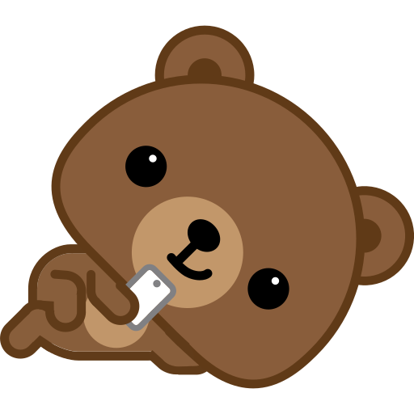
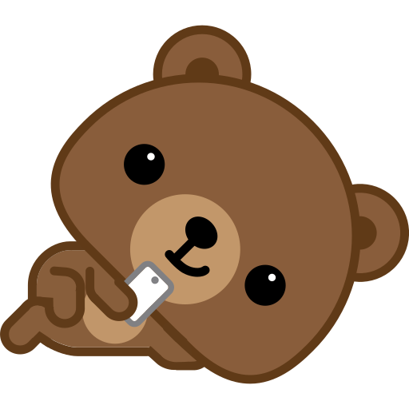

Hola princesita linda <3
En esta noche tranquila, quiero tomar un momento
para agradecerte por todo lo que eres y por todo lo que significas
para mí.
A veces, cuando miro hacia atrás, me sorprende pensar en cómo
la vida nos ha llevado por caminos inesperados, caminos que
no siempre han sido fáciles, pero que, de alguna manera, nos
han traído hasta aquí, hasta este momento en el que puedo
decir que te amo con todo mi corazón.
Gracias por estar a mi lado, incluso en los días difíciles
, Cuando la vida parece desafiarnos con pruebas que a veces
parecen demasiado grandes. Tu fuerza, tu paciencia y tu amor
han sido un faro para mí, guiándome en la oscuridad y dándome
la esperanza de que, no importa lo que pase, siempre lo
superaremos juntos. Nunca imaginé que podría amar a alguien
como te amoa ti. No es solo un amor que nace de la
admiración o del cariño, sino un amor profundo que ha
crecido con cada risa compartida, con cada conversación
nocturna, con cada momento de silencio en el que
nuestras almas se han Conectado de una manera que
es dificil de describir con palabras.
Sé que ahora debes estar dormida, descansando después de
un día largo. Quizás leas esto cuando despiertes, cuando
el sol vuelva a iluminar nuestro mundo. Pero quiero que
sepas que, incluso en este momento, mientras la noche avanza
yel mundo parece más silencioso, estoy pensando en ti pienso
en el día en que, en lugar de enviarnos mensajes como este,
estemos despertando juntos, abrazados en la calidez de un
nuevo amanecer, construyendo una vida llena de amor y de
sueños compartidos.
Quiero que leas esto...
toca la caja
Todo lo que siento por ti...
click aqui para volver con el amor de tu vida